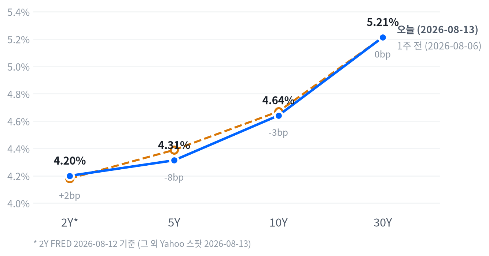

오늘 랠리의 핵심 동인은 7월 PPI가 예상을 하회한 결과다. 전날(8/12) CPI 둔화에 이어 PPI까지 물가 완화 신호를 재확인하면서 CME FedWatch 9월 FOMC 금리 인상 확률은 CPI 발표 전 55%에서 CPI 발표 후 42%로, PPI 발표 후에는 32%까지 낮아졌다. 여기에 EIA 재고 급증에 따른 WTI·Brent 급락(-2.47%, -2.27%)이 인플레이션 우려를 한 번 더 눌렀고, S&P500은 사상 최고치(7,798.99)로 마감하며 상승 종목이 하락 종목을 1.8대1로 앞서는 넓은 시장 폭을 보였다.
크로스에셋으로 보면 대체로 정합적이다. 국채 금리가 전 구간 하락하고(특히 벨리 구간) 나스닥·기술주가 강세를 보인 조합은 '물가 둔화 → 금리 인상 경계 완화 → 위험자산 선호'라는 동일한 논리로 설명된다. 다만 두 가지 결이 어긋나는 대목이 있다 — 하나는 금이 개장 초반 고점 이후 낙폭 대부분을 되돌리며 안전자산 수요가 약화된 점이고, 다른 하나는 달러가 사실상 보합(DXY -0.04%)인데도 원화만 유독 +0.42% 약세를 나타내 국내 요인이 달러 방향과 별개로 작용했을 가능성을 시사한다.
다음 촉매는 8/17 엠파이어스테이트 제조업지수, 8/18 주택착공·건축허가·산업생산, 8/19 FOMC 의사록, 8/20 필라델피아 연은 지수·경기선행지수로 이어지는 다음 주 캘린더다. FOMC 의사록에서 9월 인상 논의의 강도가 어떻게 나타나는지가 관건이며, 메모리·광인프라주는 이후 발표될 개별 실적·수주 뉴스로 오늘의 급등락이 추세로 이어지는지 확인해야 한다.
| 지수 | 종가 | 전일比 | 등락률 |
|---|---|---|---|
| 나스닥종합 | 26,803.03 | +214.54 | +0.81% |
| S&P500 Growth | 142.54 | +1.05 | +0.74% |
| S&P500 | 7,798.99 | +50.49 | +0.65% |
| S&P500 Value | 238.01 | +1.41 | +0.60% |
| 러셀2000 | 3,052.85 | +7.37 | +0.24% |
| 다우존스 | 53,839.99 | +69.72 | +0.13% |
| 섹터 | 종가 | 전일比 | 등락률 |
|---|---|---|---|
| 커뮤니케이션 | 112.55 | +2.28 | +2.07% |
| 리츠 | 45.12 | +0.63 | +1.42% |
| 필수소비재 | 86.00 | +0.92 | +1.08% |
| 기술 | 190.77 | +1.91 | +1.01% |
| 금융 | 58.26 | +0.34 | +0.59% |
| 임의소비재 | 118.45 | +0.56 | +0.48% |
| 유틸리티 | 44.04 | +0.20 | +0.46% |
| 에너지 | 61.06 | +0.03 | +0.05% |
| 헬스케어 | 168.38 | -0.06 | -0.04% |
| 산업재 | 185.79 | -0.09 | -0.05% |
| 소재 | 52.31 | -0.27 | -0.51% |
나스닥과 S&P500은 궤적이 거의 겹쳤다. 나스닥은 개장(09:30 ET) 직후 개장가 대비 -0.03% 저점을 찍었고 S&P500은 개장가 자체가 저점이었는데, 두 지수 모두 10:30 ET까지 꾸준히 올라 나스닥 +0.95%, S&P500 +0.69%(개장가 대비)의 고점을 형성했다. 08:30 ET에 발표된 7월 PPI 예상 하회 결과가 오전 매수세를 자극한 전형적인 패턴으로 풀이되며, 이후 오후 내내 소폭 되돌림을 거쳐 종가는 고점보다는 낮지만 상승폭 대부분을 유지한 채 마감했다.
러셀2000은 대형지수와 다른 궤적을 그렸다. 개장 후 10:00 ET에 개장가 대비 +0.48% 고점을 먼저 찍은 뒤 낮 12:00 ET까지 밀려 -0.13% 저점을 다졌고, 오후 들어 낙폭을 일부 되돌리며 +0.24% 상승 마감해 소형주가 대형주보다 상대적으로 부진한 하루였다.
엔비디아는 지수보다 훨씬 가파른 변동을 보였다. 09:30 ET 장 시작과 동시에 227.23(개장가 대비 +0.97%)으로 고점을 찍은 뒤 11:30 ET 저점(223.71, -0.60%)까지 밀렸다가 종가 225.37(+0.54%)로 낙폭 일부를 되돌리며 마감해, 장 초반 매수세가 오전 중 상당 부분 되돌려진 흐름이었다.
다우(+0.13%)와 러셀2000(+0.24%)이 소폭 상승에 그친 반면 나스닥(+0.81%)·기술 섹터(+1.01%)·커뮤니케이션서비스(+2.07%)가 뚜렷하게 앞서, 오늘 랠리는 지수 전반의 위험선호 회복이라기보다 대형 성장주·메모리 밸류체인 중심의 선별적 강세에 가깝다. 상승 종목이 하락 종목을 약 1.8대1로 앞섰고 52주 신고가가 28개로 신저가(1개)를 압도해, 시장 폭 자체는 견조하게 유지됐다.
섹터 최상위를 커뮤니케이션서비스가 차지한 배경은 넷플릭스·메타 등 대형주 강세로 짐작되며, 이는 나스닥 상승을 견인한 종목군(메타·마이크론·넷플릭스)과도 겹친다. 반면 소재(-0.51%)·산업재(-0.05%)·헬스케어(-0.04%)는 약보합에 머물러, 경기민감 가치주보다 성장·필수소비재·리츠 쪽으로 자금이 쏠린 하루였다.
| 만기 | 종가(8/13) | 전일比 | 1주 전 | 주간 변화 |
|---|---|---|---|---|
| 2Y* | 4.20% | -2.0bp | 4.18%(8/5) | +2.0bp |
| 5Y | 4.313% | -6.2bp | 4.389%(8/6) | -7.6bp |
| 10Y | 4.641% | -4.1bp | 4.670%(8/6) | -2.9bp |
| 30Y | 5.213% | -3.4bp | 5.213%(8/6) | 0.0bp |

8/13 하루로 보면 5Y(-6.2bp)·10Y(-4.1bp)·30Y(-3.4bp) 모두 낮아졌지만 낙폭은 벨리 구간에서 가장 컸다. 5s30s로 환산하면 하루 만에 +2.8bp 벌어져, PPI 예상 하회가 중단기 금리를 더 강하게 눌렀지만 초장기물까지는 그 힘이 온전히 전이되지 않은 전형적인 불 스티프닝(금리 하락 속 장단기 스프레드 확대) 흐름이었다.
1주일 단위로 보면 방향이 더 뚜렷하다. 5Y·10Y가 각각 -7.6bp, -2.9bp로 낮아진 반면 30Y는 보합(0.0bp)에 머물러, 한 주 내내 벨리 구간 중심의 금리 하락이 진행됐다. 2Y는 주간 기준 +2.0bp로 소폭 올랐지만 이 구간은 FRED 8/5~8/12 기준으로 벨리·장기물보다 하루 뒤처진 데이터라 단정적으로 해석하기는 이르다.
2s10s(44.1bp, 혼합 기준)와 동일자 FRED 기준(48.0bp)의 격차가 3.9bp에 그친다는 점은 이 스프레드가 날짜 불일치보다 실제 커브 수준을 상당히 잘 반영하고 있다는 뜻이다. 90.0bp에 달하는 5s30s는 커브가 여전히 정상화(디스인버전) 국면에 있으며 장기 구간이 상대적으로 가파르게 서 있음을 보여준다.
PPI·CPI 연속 둔화로 9월 FOMC 금리 인상 확률이 낮아지는 국면에서는 벨리 구간(5Y~10Y)이 가장 먼저, 가장 크게 반응한다는 점이 이번 주 흐름으로 재확인됐다. 벨리 중심의 듀레이션 소폭 확대는 유효하지만, 30Y는 주간 기준 거의 움직이지 않아 장기물 프리미엄이 쉽게 빠지지 않고 있다는 점에 유의해야 한다.
포지셔닝은 벨리 비중 확대·장기물 중립을 권고한다. 5s30s 스프레드(90.0bp)가 추가로 벌어지는지(스티프닝 지속) 여부와 9월 FOMC를 향한 CME FedWatch 인상 확률 추이를 확인 트리거로 삼아, 30Y 중심의 듀레이션 확대는 장기물 낙폭이 벨리를 따라잡는 신호가 나온 뒤로 미루는 편이 합리적이다.
| 페어 | 종가 | 전일比 | 등락률 |
|---|---|---|---|
| USD/KRW | 1,418.18 | +6.00 | +0.42% |
| USD/JPY | 159.48 | +0.21 | +0.13% |
| EUR/USD | 1.1534 | -0.0010 | -0.08% |
| 달러인덱스(DXY) | 99.97 | -0.04 | -0.04% |
USD/JPY는 오후 15:00 ET에 159.02까지 밀린 뒤(개장가 대비 -0.23%) 저녁 18:30 ET에 159.57로 고점을 찍고 그 부근에서 마감해, 하루 사이 저점에서 고점까지 약 0.35%p 폭의 되돌림을 보였다. 달러인덱스는 -0.04%로 사실상 보합에 머물렀는데 엔화만 +0.13% 약세를 나타내, 오늘은 전방위 달러 약세보다는 엔화 자체의 개별 약세가 두드러졌다.
원화는 달러 대비 +0.42% 약세로 여타 통화와 결이 달랐다. 국내 메모리주(삼성전자·SK하이닉스)가 미국 세션에서도 강세를 이어갔던 점을 감안하면 다소 역설적인 흐름인데, 유가 급락에 따른 경상수지·정유업종 우려나 미국 금리 경로 재가격 과정에서의 자금 흐름 등 다른 요인이 더 크게 작용했을 가능성이 있다. 유로는 -0.08%로 달러 대비 완만한 약세를 나타냈다.
| 품목 | 종가 | 전일比 | 등락률 |
|---|---|---|---|
| Brent유 | 86.96 | -2.02 | -2.27% |
| WTI | 81.21 | -2.06 | -2.47% |
| 천연가스 | 2.73 | -0.07 | -2.57% |
| 금 | 4,407.10 | -1.80 | -0.04% |
WTI는 이날 최대 변동 자산이었다. 자정 무렵(02:30 ET)에 고점(83.30, 개장가 대비 +0.84%)을 찍은 뒤 뉴욕 정규장 초반인 10:00 ET까지 급격히 밀려 저점(80.09, -3.05%)을 형성했고, 이후 낙폭을 일부 되돌리며 -2.47%로 마감했다. EIA 재고가 전주 대비 1,740만 배럴 급증(2023년 초 이후 최대 주간 증가)한 결과가 발표되며 수요 둔화 우려가 미국-이란 지정학 리스크를 압도한 것으로 풀이된다. Brent(-2.27%)도 같은 흐름을 따라갔다.
금은 방향이 정반대였다. 새벽 01:00 ET에 고점(4,465.20, 개장가 대비 +0.15%)을 찍었으나 이후 하루 내내 미끄러져 오후 15:00 ET 저점(4,400.00, -1.32%)까지 밀렸고, 종가 기준으로는 전일比 -0.04%에 그쳐 낙폭 대부분을 되돌렸다. 유가 급락에 따른 인플레이션 우려 완화와 증시 랠리에 따른 안전자산 수요 약화가 겹친 결과로 볼 수 있다.
천연가스는 -2.57%로 원유와 같은 방향으로 움직여 에너지 복합체 전반이 공급과잉·수요둔화 우려에 눌린 하루였다.
| 자산군 | 판단 | 전략 근거 |
|---|---|---|
| 주식 | 선별적 위험자산 확대, 대형 성장주·메모리 밸류체인 중심 | 다우·러셀2000은 보합권인데 나스닥·기술·커뮤니케이션서비스만 뚜렷이 강세 — 지수 베타보다 종목 선별이 유효하며, 52주 신고가 28개 대 신저가 1개로 시장 폭 자체는 견조 |
| 채권 | 벨리 구간 비중 확대, 장기물은 중립 유지 | 5Y·10Y가 30Y보다 하루·주간 모두 더 크게 하락(불 스티프닝) — PPI·CPI 연속 둔화가 벨리에 먼저 반영되는 패턴, 30Y는 주간 기준 보합이라 장기 듀레이션 확대는 보류 |
| FX | 달러 중립, 원화 약세 요인 별도 점검 | DXY는 사실상 보합(-0.04%)인데 원화만 +0.42% 약세 — 국내 메모리주 강세와 반대 방향으로 움직여 유가·자금흐름 등 별도 요인 확인 필요 |
| 원자재 | 유가는 이벤트드리븐 대응, 금은 눌림목에서 관찰 | WTI·Brent가 EIA 재고 급증에 급락(-2.47%, -2.27%) — 수요둔화 우려 지속 여부 확인 필요, 금은 장중 한때 -1.3%대까지 밀렸다가 낙폭을 되돌려 안전자산 수요 자체가 크게 훼손되진 않았다고 판단 |
| 메모리 | 구조적 강세 추종, 분할 대응 | 웨스턴디지털(+7.3%)·SK하이닉스(+5.9%)·씨게이트(+4.9%)·삼성전자(+4.9%)·마이크론(+4.2%) 동반 급등, 공급 부족 서사가 재확인됐지만 최근 몇 주간 급등락이 반복된 이력을 감안해 일괄매수는 지양 |
| AI 인프라 | 광인프라는 실적 후 조정 관찰, 전력·반도체는 비중 유지 | 코히런트(-8.0%)·루멘텀(-5.6%)은 실적 자체는 견조했으나 마진 우려(코히런트 비GAAP 총마진 68.4%→66.3%)로 조정 — 마벨(+2.35%)·GE버노바(+0.92%)는 견조해 부문별 온도차가 뚜렷 |
① 9월 FOMC 인상 프라이싱 재상승 — 다음 PCE·8월 CPI가 예상보다 뜨겁게 나오거나 유가가 지정학 리스크(미국-이란 갈등)로 재반등하면, 현재 32%까지 낮아진 9월 인상 확률이 다시 높아지며 벨리 구간 금리가 재차 압박받고 오늘 강세를 보인 성장주·메모리가 조정받을 수 있다.
② 메모리 변동성 재발 — 메모리 섹터는 최근 몇 주간 급등과 급락(8/3 전후 조정)을 반복해왔다. 오늘의 강세도 공급 부족 서사와 PPI 완화가 겹친 결과라 개별 촉매가 흔들리면 재차 롤러코스터 장세가 나타날 소지가 있다.
③ AI 하드웨어 마진 우려 확산 — 코히런트의 마진 압박(메모리 원가 상승·AI 하드웨어 물량 증가 영향)이 다른 광인프라·AI 하드웨어 업체로 전이될 경우, 오늘 견조했던 마벨·GE버노바·버티브 등 여타 AI 인프라 밸류체인까지 밸류에이션 재점검 압력을 받을 수 있다.
가장 강한 상승은 메모리·스토리지 그룹에서 나왔다. 웨스턴디지털이 +7.31%로 이날 커버리지 종목 중 최대 상승폭을 기록했고 SK하이닉스(+5.92%)·씨게이트(+4.91%)·삼성전자(+4.89%)·마이크론(+4.23%)이 동반 급등했다. 메모리 3사가 2027년까지 DRAM·HBM 공급을 사실상 완판했다는 서사가 이어지는 가운데 이날 PPI 완화로 밸류에이션 부담까지 덜어낸 결과로 볼 수 있다.
반대로 광인프라 부품주는 실적 발표 후 급락했다. 코히런트가 -7.99%로 최대 하락폭을 기록했는데, 매출은 전년比 33.7% 늘고 EPS도 컨센서스를 상회했지만 비GAAP 총마진이 68.4%에서 66.3%로 낮아진 점이 부담으로 작용했다. 루멘텀도 -5.58%로 동반 조정받았는데, 이는 8/11 실적 발표 이후 전일 기록한 급등분이 일부 되돌려진 성격이 크다.
섹터 단위에서는 커뮤니케이션서비스가 +2.07%로 하루 최대 상승 섹터에 올랐다. 나스닥 강세를 견인한 메타·넷플릭스 등 대형주 강세가 섹터 지수에도 그대로 반영된 것으로 풀이된다.
| 종목 | 종가 | 전일比 | 등락률 |
|---|---|---|---|
| 웨스턴디지털 | $487.29 | +33.19 | +7.31% |
| SK하이닉스 | 1,593,000원 | +89,000 | +5.92% |
| 씨게이트 | $921.37 | +43.16 | +4.91% |
| 삼성전자 | 268,000원 | +12,500 | +4.89% |
| 마이크론 | $949.83 | +38.54 | +4.23% |
| 엔비디아 | $225.30 | +1.21 | +0.54% |
메모리 3사(마이크론·SK하이닉스·삼성전자)는 DRAM·HBM 공급을 2027년까지 사실상 완판한 상태로 알려져 있으며, AI 하이퍼스케일러의 매집 수요가 가격을 밀어올리는 "메모리 슈퍼사이클" 서사가 이어지고 있다. 8/9 이후 삼성전자·SK하이닉스가 공급 타이트닝 경고를 내놓으며 급등세로 전환했고, 8/12에는 "SK하이닉스·샌디스크 8% 상승, 웨스턴디지털 4% 상승, 메모리 부족 심화" 헤드라인이 나온 바 있다.
다만 최근 1~2주 흐름은 변동성이 컸다는 점을 유념할 필요가 있다. 8/3 전후로는 씨게이트·웨스턴디지털이 -6%, SK하이닉스·마이크론이 -5%대로 밀리는 "메모리 냉각" 국면이 있었고, 이후 다시 급등으로 전환하는 등 단기 등락이 반복되고 있다.
일각에서는 밸류에이션·수요 둔화 경계론도 병존한다. 일부 브로커리지는 중국 경쟁사 추격과 스마트폰·PC 수요 둔화 우려를 이유로 삼성전자·SK하이닉스 목표주가를 최근 하향 조정한 것으로 보도됐다.
공급 부족 서사 자체는 훼손되지 않았고 오늘 급등은 PPI 완화에 따른 밸류에이션 부담 완화가 더해진 결과로 볼 수 있다. 다만 최근 몇 주간 급등락이 반복돼온 만큼 일괄 매수보다는 분할 대응이 합리적이며, 밸류에이션 고점 논쟁이 재부각될 경우 8/3과 유사한 되돌림이 재현될 수 있다는 점을 확인 트리거로 삼을 필요가 있다.
| 종목 | 분야 | 종가 | 전일比 | 등락률 |
|---|---|---|---|---|
| 마벨 | AI 반도체·커스텀 실리콘 | $222.18 | +5.10 | +2.35% |
| GE버노바 | 발전·송배전 설비 | $1,049.42 | +9.52 | +0.92% |
| 버티브 | 데이터센터 전력·냉각 | $287.07 | -1.29 | -0.45% |
| 루멘텀 | 광부품·광연결 솔루션 | $880.41 | -52.06 | -5.58% |
| 코히런트 | 광트랜시버·광부품 | $327.23 | -28.41 | -7.99% |
코히런트는 8/12 장 마감 후 실적을 발표했다. 매출은 20.5억 달러로 전년比 33.7% 늘었고 비GAAP EPS도 1.74달러로 컨센서스(1.612달러)를 상회했지만, 비GAAP 총마진이 68.4%에서 66.3%로 낮아진 점이 부담으로 작용해 8/13 주가는 하락 압력을 받았다. 루멘텀은 8/11 장 마감 후 FY2026 4분기 실적을 시장 예상 상회로 발표해 다음 날 +13% 급등했으나, 8/13에는 그 급등분이 일부 되돌려졌다.
마벨은 8/4 AI 메모리 인프라 포트폴리오 확장을 발표했다 — 서버급 AI 스토리지, 랙스케일 CXL 메모리 확장·풀링, 포드 단위 광학 공유 메모리 등 에이전틱 AI 추론을 겨냥한 하이퍼스케일러向 메모리 확장성 개선이 핵심이다. GE버노바·버티브는 AI 데이터센터發 전력·냉각 수요 확대 수혜 서사가 이어지고 있으며, GE버노바는 연초 데이터센터向 장비 수주 24억 달러(2025년 전체 실적 초과)를 확보했고 버티브는 7월 이탈리아 공장 증설로 냉각 시스템 생산능력을 2026년 말까지 2배로 늘리겠다고 밝혔다.
오늘은 실적으로 마진 우려가 불거진 광인프라(코히런트·루멘텀)가 전력·반도체 밸류체인 대비 뚜렷하게 약했다. 데이터센터 광연결·전력 수요라는 구조적 테마 자체는 훼손되지 않았다고 볼 수 있지만, AI 하드웨어 원가 상승이 마진을 갉아먹는 패턴이 다른 업체로 번지는지가 다음 확인 포인트다. 마벨·GE버노바·버티브처럼 오늘 견조했던 종목은 후속 수주·가이던스로 모멘텀이 이어지는지 확인한 뒤 비중을 늘리는 접근이 합리적이다.
| 지표 | Actual | Forecast | Previous | 발표일 | 판정 |
|---|---|---|---|---|---|
| 비농업고용 증감 | -23K | — | +20K | 2026-08-07 | — |
| 실업률 | 4.1% | — | 4.2% | 2026-08-07 | — |
| 신규 실업수당 청구건수 | 209K | — | 200K | 기준주 2026-08-08, 발표 2026-08-13 | — |
| 실업수당 청구 4주 평균 | 199K | — | 199K | 기준주 2026-08-08, 발표 2026-08-13 | — |
| 계속 실업수당 청구건수 | 1,777K | — | 1,799K | 기준주 2026-08-01, 발표 2026-08-06 | — |
| JOLTS 구인건수 | 7,359K | — | 7,537K | 2026-06 기준월 | — |
| 지표 | Actual | Forecast | Previous | 발표일 | 판정 |
|---|---|---|---|---|---|
| 산업생산 MoM | 0.08% | — | 0.14% | 2026-06 기준월 | — |
| 내구재수주 MoM | 0.47% | — | -4.00% | 2026-06 기준월 | — |
| 신규주택판매 | 628K | — | 618K | 2026-06 기준월 | — |
| 기존주택판매 | 4,060K | — | 4,130K | 2026-07 기준월 | — |
| 실질GDP 성장률 QoQ(연율) | 1.5% | — | 2.1% | 2026년 2Q | — |
| 지표 | Actual | Forecast | Previous | 발표일 | 판정 |
|---|---|---|---|---|---|
| 소매판매 MoM | 0.22% | — | 1.02% | 2026-06 기준월 | — |
| 미시간 소비자심리지수 | 49.5 | — | 44.8 | 2026-06 기준월 | — |
| 지표 | Actual | Forecast | Previous | 발표일 | 판정 |
|---|---|---|---|---|---|
| CPI YoY | 3.54%(FRED; BLS 3.4%) | — | 3.73%(FRED) | 2026-08-12 | — |
| CPI MoM | 0.07%(FRED; BLS 0.1%) | — | -0.42%(FRED) | 2026-08-12 | — |
| 근원 CPI YoY | 2.79%(FRED) | — | 2.81%(FRED) | 2026-08-12 | — |
| 근원 CPI MoM | 0.22%(FRED) | — | -0.02%(FRED) | 2026-08-12 | — |
| PPI 최종수요 MoM | -0.03%(FRED; BLS 0.0%) | 0.0% | -0.11% | 2026-08-13 | 하회▼ |
| PCE 물가지수 YoY | 3.67% | — | 4.08% | 2026-06 기준월 | — |
| 근원 PCE YoY | 3.29% | — | 3.42% | 2026-06 기준월 | — |
| 미시간 1년 기대인플레 | 4.6% | — | 4.8% | 2026-06 기준월 | — |
7월 PPI가 예상을 하회하며 전날 CPI 둔화에 이어 물가 완화 흐름을 재확인하자 국채금리는 전 구간, 특히 벨리 구간(5Y -6.2bp, 10Y -4.1bp) 위주로 낮아졌다. 주식은 나스닥·기술·커뮤니케이션서비스가 강세를 보이며 S&P500이 사상 최고치를 새로 썼다.
CME FedWatch 기준 9월 16일 FOMC 인상 확률은 7월 CPI 발표 전 55%에서 CPI 발표 후 42%로, 이날 PPI 발표 후에는 32%까지 추가로 낮아진 것으로 보도된다. 앞서 8/7 발표된 부진한 7월 고용지표(비농업 -23K)가 이미 인상 확률을 크게 낮춘 첫 촉매였고, 이번 사이클은 통상적인 인하 기대가 아니라 연초 관세發 인플레이션 재점화 우려로 '9월 인상 가능성'을 저울질해온 이례적인 국면이라는 점에서 이번 지표 둔화는 그 인상 프라이싱을 되돌리는 재료로 작동했다.
심리(선행) 지표는 개선 쪽으로 기운다. 미시간 소비자심리지수가 44.8에서 49.5로 뚜렷하게 올랐고 미시간 1년 기대인플레도 4.8%에서 4.6%로 낮아져, 소비자들의 체감 경기와 물가 기대가 함께 완화됐다.
활동(중행) 지표는 방향이 엇갈린다. 산업생산(0.14%→0.08%)과 소매판매(1.02%→0.22%)는 둔화됐고 실질GDP 성장률도 2.1%에서 1.5%로 낮아졌지만, 내구재수주(-4.00%→+0.47%)와 신규주택판매(618K→628K)는 오히려 개선돼 감속이 전 항목에 걸쳐 일률적이지는 않다. 다만 비농업고용이 -23K로 감소 전환하고 JOLTS 구인건수도 7,537K에서 7,359K로 줄어, 노동시장을 포함한 활동 축 전반은 완만한 냉각 쪽에 가깝다.
성적표(후행)인 물가 지표는 가장 일관된 방향을 보인다. CPI YoY(3.73%→3.54%)·PPI MoM(-0.11%→-0.03%, 여전히 마이너스)·PCE YoY(4.08%→3.67%)·근원 PCE YoY(3.42%→3.29%)가 모두 낮아져 디스인플레이션이 다방면에서 재확인됐다. 심리(선행)의 기대인플레 하락과 성적표(후행)의 CPI·PCE 둔화가 같은 방향을 가리킨다는 점에서 축 간 정합성이 높은 반면, 소비자심리 개선(선행)과 소매판매 둔화(중행)는 다소 어긋나 있어 심리 개선이 실제 지출 확대로 아직 이어지지 않고 있다는 점에 유의할 필요가 있다.
기본 시나리오는 완만한 성장 둔화 속 디스인플레이션이 이어지는 소프트랜딩이다. CPI·PPI·PCE의 일관된 하향 흐름과 소비자 기대인플레 하락, 9월 인상 확률의 지속적인 하락(55%→42%→32%)이 이를 뒷받침하며, 연준은 9/19 FOMC 의사록 공개까지 뚜렷한 정책 신호 없이 추가 지표를 확인하며 관망할 가능성이 높다.
대안 시나리오는 유가·관세發 인플레이션 재점화 리스크다. 미국-이란 지정학 긴장이 재고조되거나 관세 전가가 다음 CPI·PPI에 반영될 경우, 이번 주 내내 낮아진 9월 인상 확률(32%)이 되돌려지며 벨리 구간 금리와 달러가 재차 강세로 돌아설 수 있다. 이 경우 오늘 강세를 보인 메모리·성장주 밸류에이션이 조정 압력을 받을 소지가 있다.
시나리오를 가를 핵심 발표는 8/17 엠파이어스테이트 제조업지수, 8/18 주택착공·건축허가·산업생산, 8/19 FOMC 의사록, 8/20 필라델피아 연은 지수·경기선행지수다. 자산배분 관점에서는 FOMC 의사록에서 9월 인상 논의 강도가 확인되기 전까지 벨리 구간 채권 비중 확대와 메모리·AI 인프라 밸류체인 내 선별적 종목 선택을 유지하는 편이 합리적이다.